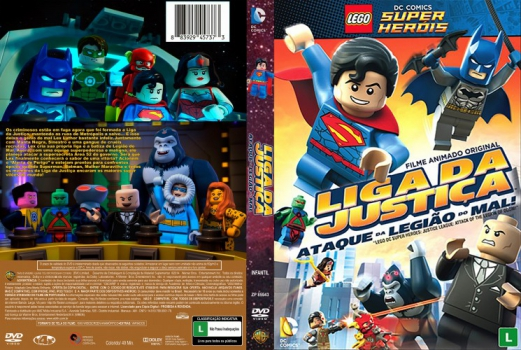

Outro Título:LEGO DC Comics Super Heroes: Justice League - Attack of the Legion of Doom!
País:United States, 77 minutos
Idiomas falados:Espanhol, Inglês, Português
Gênero(s):Animação, Ação, Aventura, Família, Comédia
Diretor(s):Rick Morales
Escritor(es):Jim Krieg
Codec:MPEG-2 (DVD)
Número: 5780


Certificado:L
Sinopse:
Com a Liga da Justiça recém formada, o crime não avança em Metropolis. Isso irrita muito a Lex Luthor, então ele com Black Manta, Sinestro e outros vilões, cria sua própria liga, a Legião do Mal, para atacar um site top-secret do governo, a Área 52. Superman, Batman, Wonder Woman e outros super herois vão enfrentar os maiores super-vilões.
Elenco:


Tipo de mídia: DVD5,
Legendas: Espanhol, Inglês, Português, Sem Legendas
Alugado: Não
Tela: Anamorphic Widescreen